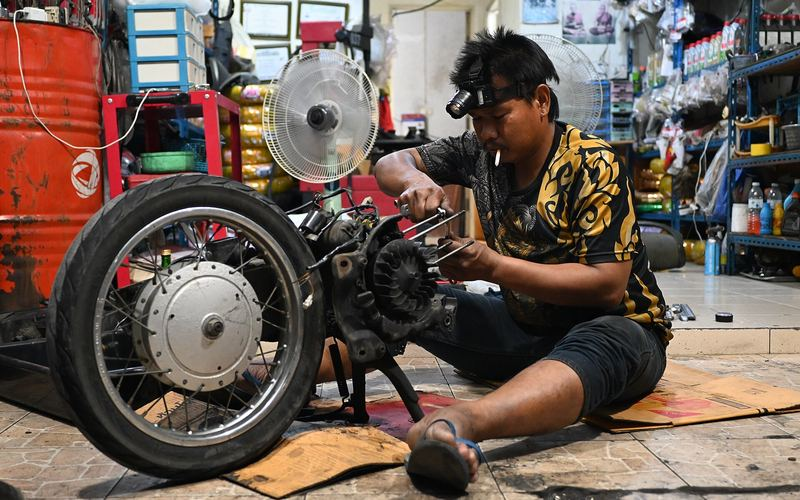
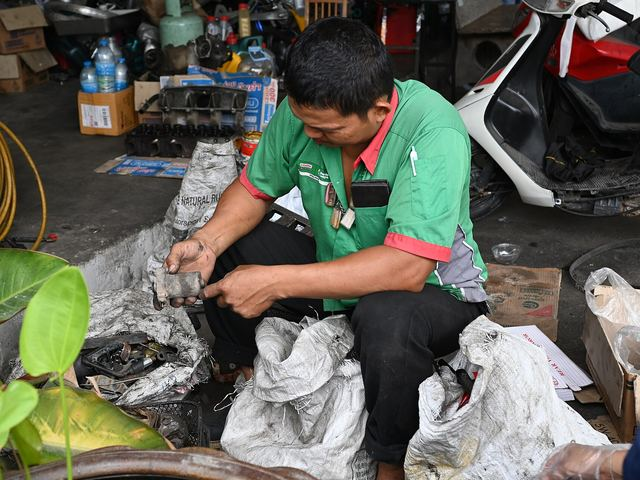

Motor brebet seminggu, di sini 30 menit langsung beres. Harganya pas sama estimasi.
Dimas
Bintang 5 dari 5 · Keputih

Bengkel motor · Gubeng, Surabaya
Mekanik telaten, estimasi biaya di depan, dan suku cadang bergaransi. Booking online, datang langsung dikerjakan — gak pakai antre.
Kenapa kami
Estimasi biaya dijelaskan sebelum dikerjakan. Gak ada biaya kejutan di nota.
Terbiasa menangani matic injeksi, bebek karburator, sampai motor sport.
Ada keluhan setelah servis? Balik lagi, kami cek ulang gratis.
Area Gubeng, Sukolilo, dan Mulyorejo tanpa biaya tambahan.

Tentang kami
Berawal dari garasi rumah pada 2019, kini Bengkel Arek Gubeng melayani ribuan motor warga Surabaya timur.
Prinsip kami sederhana: jelaskan kerusakan apa adanya, kerjakan yang memang perlu, dan biarkan pelanggan memutuskan.
Cara kerja
Pilih jadwal dan jenis servis lewat form. Tanpa antre di lokasi.
Mekanik memeriksa motor dan memberi estimasi biaya.
Servis dimulai setelah kamu setuju. Bagian yang diganti ditunjukkan.
Motor dites sebelum diserahkan, lengkap dengan garansi 7 hari.
Paling sering dipesan
Testimoni
Motor brebet seminggu, di sini 30 menit langsung beres. Harganya pas sama estimasi.
Bintang 5 dari 5 · Keputih
Enak bisa booking dulu, datang langsung dikerjakan. Ruang tunggunya adem, ada kopi pula.
Bintang 5 dari 5 · Gubeng
Mekaniknya mau jelasin bagian yang rusak. Jujur, gak asal ganti part.
Bintang 5 dari 5 · Mulyorejo
Booking sekarang, pilih jam yang pas, dan motor siap dikerjakan begitu kamu datang.
Booking Sekarang